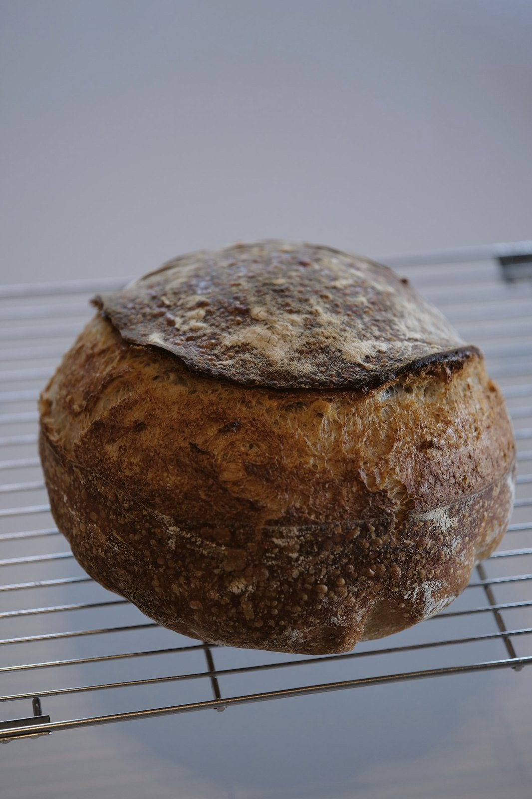

Structure + science + craft = a system that gives a predictably tasty loaf. Every recipe here has grams, temperatures and a video for each step.

Scared of 75%? Stay with me.
recipe of the week →One paper a week. Read for you.
paper of the week →Your starter isn't dead. It's hungry.
starter week →Sourdough has no yeast. It does.
myth of the week →Eight things. Half have swaps.
home bakery kit →I gave my starter away. For 3 years.
from the bakery →